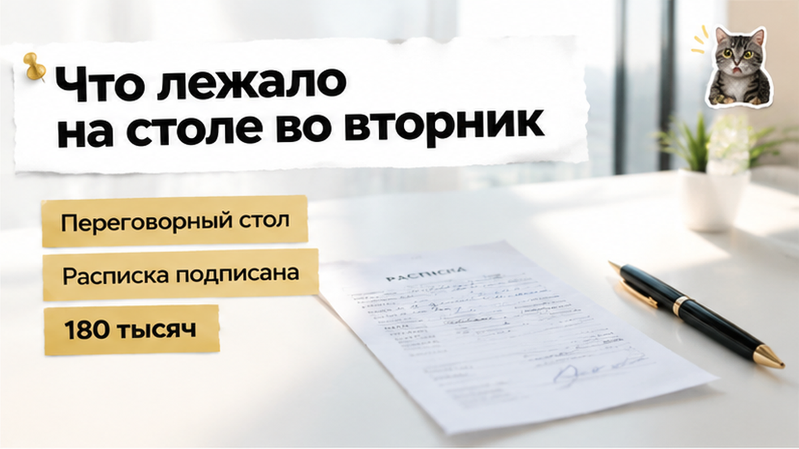
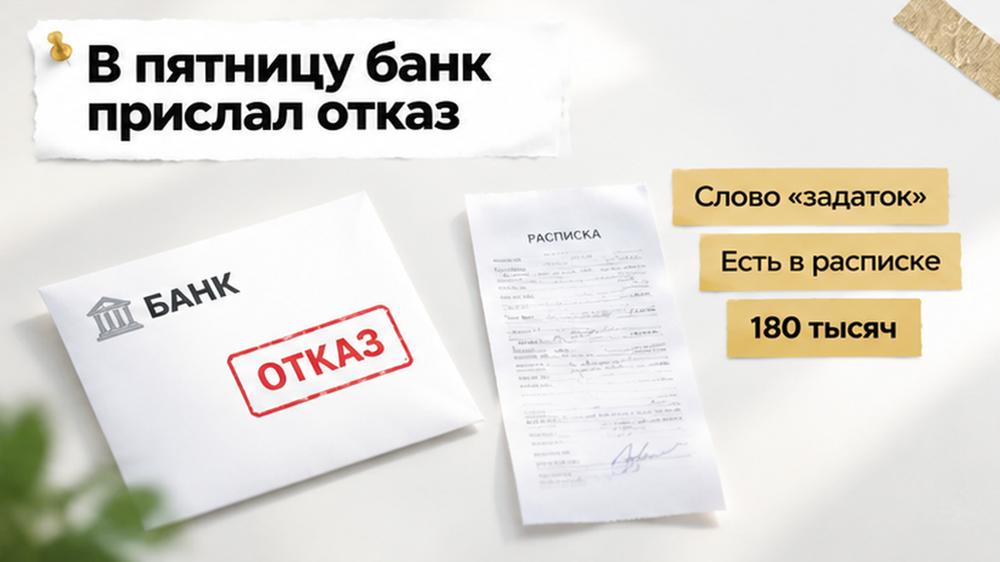
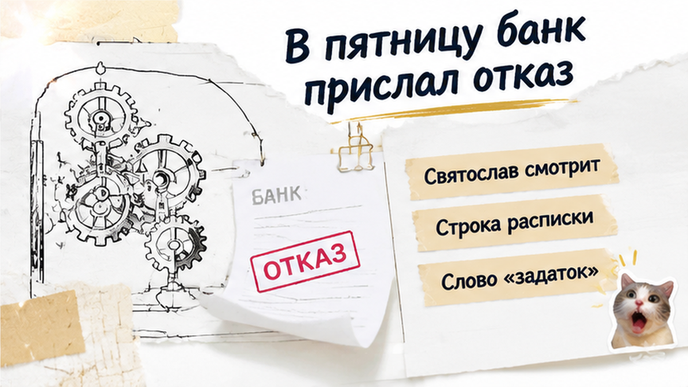
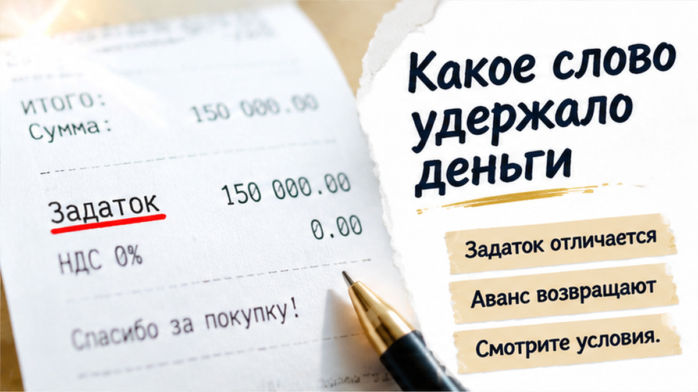
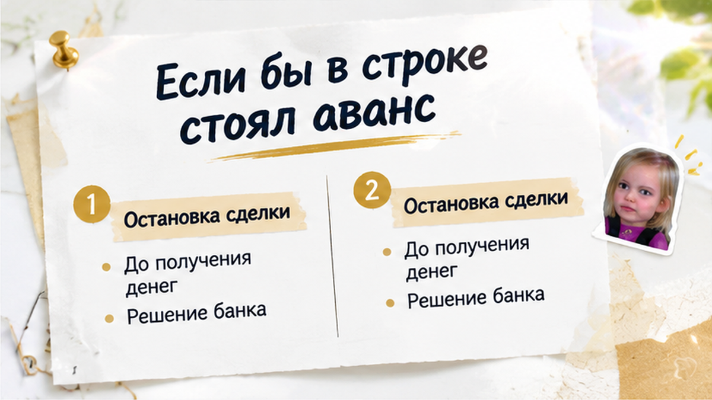
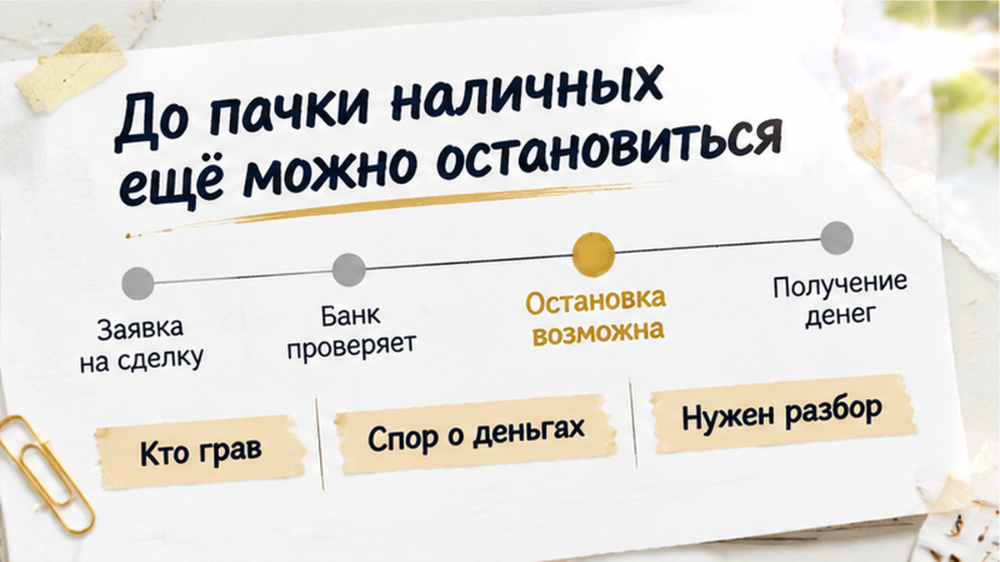

В Тюмени супруги отдали продавцу квартиры на вторичке 180 тысяч рублей по расписке со словом «задаток», через четыре дня банк отказал им в ипотеке, и деньги остались у продавца. Сделку так и не подписали, квартира осталась у хозяина, а у покупателей на руках остался лист бумаги. На этом листе одно слово весит больше, чем все устные «ну если банк не даст, вернём». Задаток, если по-простому, это не обычная предоплата, которую отдают по первой просьбе: бумага держит эту сумму как залог честного слова. Забрать её назад оказывается куда сложнее, чем кажется во вторник за столом, когда все улыбаются и уже обсуждают, кто какую мебель оставит.
С вами Святослав Шакин, риэлтор в Тюмени. Такие расписки я смотрю до денег, а не после. Напишите в Telegram или в MAX: разберём одно слово в строке, пока деньги ещё у вас.

Вторник, 29 сентября 2026 года. Переговорная в Тюмени.
С одной стороны стола сидит продавец квартиры, с другой супруги, которые эту квартиру хотят купить. План у них обычный, таких я вижу постоянно. Часть денег отдают сейчас, чтобы продавец снял объявление и ждал. Остаток закрывают ипотекой на вторичку.
Одобрения ещё нет. Но заявка подана, и настроение в комнате такое, будто вопрос уже решён.
Кажется чисто.
На столе лежат деньги и расписка. Короткая, на полстраницы: кто передал, кто получил, сколько, за какую квартиру. И в этой строке стоит слово «задаток». Не «аванс». Не «предоплата». Именно задаток.
Отдельной фразы о том, что будет с деньгами, если банк не одобрит кредит, в бумаге нет. Её не обсуждали так, чтобы записать. Как будто отказ банка сам собой разумеется как повод всё отменить.
Обычный человек видит в расписке подтверждение, что деньги переданы.
Риэлтор спрашивает: «А что написано про возврат, если ипотеку не дадут?»
Я риэлтор, и этот момент за годы работы видел много раз. Люди спорят о дате выхода на сделку, о том, кто платит за справки, о шкафе на кухне. А существительное в расписке подписывают не глядя, потому что оно кажется формальностью. Хотя именно оно потом решает, чья это сумма. Похожая ловушка, только с другой стороны, есть в истории про то, как расписку на квартиру написали, а денег на счёте так и не оказалось. Там тоже всё решила бумага, а не разговоры.


Три дня ожидания. В пятницу, 2 октября, супругам приходит ответ из банка: в ипотеке отказано.
Всё случилось внутри одной рабочей недели, ещё до того, как кто-то успел толком подготовиться к сделке. Другого способа заплатить остаток у покупателей к этому моменту не нашлось. Договор купли-продажи так и не подписали.
Дальше супруги делают то, что сделал бы почти любой на их месте. Звонят продавцу и просят вернуть деньги.
«Мы же не передумали. Нам банк не дал. Значит, нашей вины нет».
Продавец смотрит на это иначе. В расписке написано «задаток». Он держал квартиру под этих покупателей, а сделка сорвалась на их стороне. Для него эта сумма как раз и бралась на такой случай.
Никакой драки, никаких хлопков дверью. Просто две стороны по-разному прочитали одно слово, и у той, что держит деньги, на руках бумага в её пользу. Квартира осталась у продавца, деньги тоже. А отказ банка, на который супруги рассчитывали как на железный аргумент, сам по себе аргументом не стал.
Можно ли оставить задаток продавцу, если банк отказал? Одни скажут: конечно, слово подписали, отвечайте. Другие скажут: это нечестно, люди не передумали, им просто не дали кредит. Вы на чьей стороне?

Продавец сослался на одно слово. «Задаток».
Обычный человек видит в нём красивое название предоплаты. Риэлтор спрашивает: «А что эта бумага обещает, если сделка сорвётся?»
По статье 380 ГК РФ задаток делает сразу три дела. Засчитывается в будущую цену квартиры. Подтверждает, что стороны договорились. И обеспечивает, что сделку доведут до конца.
Проще говоря, задаток — залог честного слова. Кто сорвал покупку, тот и платит.
Дальше работает статья 381. Сделку не исполнили по вине того, кто дал задаток, — деньги остаются у того, кто их получил. Виноват продавец — он возвращает задаток в двойном размере. Разошлись по взаимному согласию до начала исполнения или исполнить стало невозможно — задаток возвращают. Сверх этого можно требовать убытки, если договор не говорит иное.
Вот и весь механизм. Без тумана.
«Но нам же банк отказал. Это и есть невозможность».
Супруги в это искренне верили. А теперь неприятная деталь, о которой за столом почти никто не думает.
Отказ банка конкретному покупателю не значит, что заплатить за квартиру стало невозможно вообще. Цену можно внести другими деньгами: через другой банк, из накоплений, у родственников. Продавец видит это именно так. Квартира на месте, он готов продавать, а покупатель не нашёл, чем расплатиться.
Я не говорю, что любой спор со словом «задаток» автоматически решается в пользу продавца. Суд смотрит на весь текст: что обещали стороны, был ли договор о будущей сделке, почему всё сорвалось.
Но если в бумаге нет ни строчки про ипотеку, у покупателя остаётся только устное «мы же говорили, что берём кредит». А устное слово против письменного «задатка» весит мало.
Похожий перекос, когда бумага разошлась с реальностью, я разбирал в истории о том, как расписку написали, а денег на счёте не оказалось.
Если бумага уже на столе, киньте фото этой строки в Telegram или MAX — посмотрю, какое слово там стоит.

Аванс — обычная предоплата. Часть цены, отданная заранее.
Он ничего не обеспечивает и никого не наказывает. Сорвалась сделка, неважно почему, — аванс по общему правилу возвращают. Продавцу просто не за что его держать.
Разница в одном слове. По последствиям — два разных мира.
Закон тут, кстати, на стороне покупателя. С оговоркой.
В той же статье 380 сказано: если есть сомнение, задаток это или нет, сумму считают авансом, пока не доказано обратное. И соглашение о задатке всегда должно быть письменным, при любой сумме.
То есть напиши они в расписке «аванс» или просто «получил в счёт оплаты квартиры» — позиция была бы куда крепче. Но когда «задаток» стоит прямо, сомневаться почти не в чем. Бумага всё сказала сама.
«А если продавец хочет именно задаток?»
Есть второй путь. В тот же документ вписывается одна человеческая фраза: если банк не одобрит ипотеку, сумма возвращается покупателю полностью в такой-то срок.
И отказ банка перестаёт быть виной покупателя. Он становится заранее оговорённым поводом разойтись.
Честный продавец такую строку обычно подписывает спокойно. Он ведь тоже не хочет месяцами ждать покупателя без денег.
Упирается и не готов прописать даже это? Задумайтесь до передачи денег. Не после.
Как одна вовремя замеченная деталь в документах уберегает от потерь, я рассказывал на случае, когда поддельное согласие супруги остановило сделку перед авансом.

Отказ банка уже ничего не перепишет.
Перепишет только текст, который вы прочитали до того, как деньги перешли через стол.
Пока купюры у вас в руках, вы сторона, которая ставит условия. Когда они у продавца, вы сторона, которая просит.
Поэтому мой совет помещается в одну привычку. Прежде чем отдать хоть рубль, найдите в расписке главное слово и прочитайте его вслух. Если там «задаток», это не просто предоплата. Эта бумага держит деньги и решает, кому они достанутся, если сделка развалится.
«Да мы же продавцу сказали, что берём ипотеку».
Сказали. А записали?
Обычный человек видит расписку на полстраницы. Риэлтор спрашивает: «А где строка про то, что будет, если банк откажет?»
Если покупка держится на ипотеке, а одобрения ещё нет, рядом со словом в расписке должна стоять отдельная фраза. Без намёков и без «ну мы же договорились». Прямо: при отказе банка деньги возвращаются покупателю полностью, и вот в какой срок. Под ней подписи обеих сторон.
Устное «да верну, конечно» у продавца на кухне ничего не стоит, когда через неделю у него появляется другой покупатель. Соглашение о задатке по закону оформляют письменно. Значит, и условие о возврате должно жить на той же бумаге.
Продавца тоже можно понять.
Он снимает квартиру с показов, отказывает другим и хочет знать, что вы не передумаете. Здесь нужен нормальный разговор, а не война. До одобрения ипотеки берём аванс или задаток с прямой оговоркой про отказ банка. После одобрения уже можно обсуждать задаток без оговорок.
А если продавец не готов вписать ни одной строчки про банк, это тоже ответ. Значит, риск отказа он целиком перекладывает на вас.
Честно скажу и другое. Я не утверждаю, что слово «задаток» в любой бумажке само решает спор. По статьям 380 и 381 ГК РФ смотрят весь текст: какие обязательства взяли стороны и почему сделка не состоялась. Но выигрывать спор потом всегда дольше и дороже, чем не допустить его до передачи денег.
Хороший документ — тот, по которому спорить не о чем.
Поэтому просто остановитесь до аванса. Пять минут над одной строкой обходятся дешевле любого юриста потом.
Если расписку уже подсовывают, а ипотеку ещё не одобрили, напишите мне. Разберём, какое слово стоит в тексте, какой фразы не хватает и как вписать её так, чтобы продавец не обиделся, а вы спали спокойно.
Деньги держит не банк и не продавец. Их держит бумага. А бумагу первым читаете вы.
Подключусь до аванса и посмотрю расписку, пока деньги ещё у вас. Звоните +7 922 001 65 05. Пишите в Telegram или MAX, разборы смотрите в Дзене и ВК. Сайт The Риэлтор, разборы и гайды, обо мне.
Материал проверен: Святослав Шакин, риэлтор в Тюмени. Текст не заменяет индивидуальную юридическую консультацию.